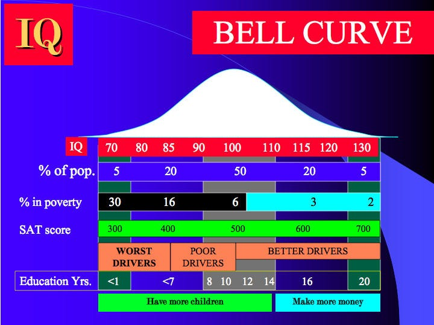
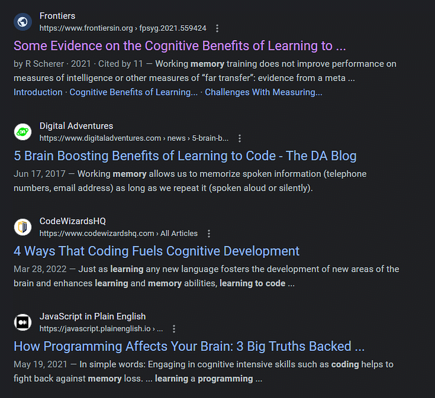
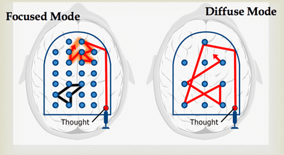

Programming, like reading & writing books/blogs, increases IQ. The practice of learning and applying knowledge through written code definitely does something magical to the mind.
Personally, me myself, had struggled with mental health issues in the past which were resolved/supplemented through coding. Coding, eating right & weight lifting to be exact. If you want to hear a similar story, YouTuber NeetCode, also says the same thing, along many others.
In NeetCode's story, solving LeetCode problems helped him recover from addiction by giving him purpose and mental exercise through solving coding problems.
I have been solving coding problems for 7 years and throughout those years my mental health has benefitted tremendously by simply learning to code more. And, of course, I read and do the typical stuff.
But, I have found coding to have unique benefits...
Coding Boosts IQ
IQ is malleable and coding is an excellent way to quicken your mind. It is said it is quite possible to increase your IQ 20-40 points in just 10 years. That is huuuuge.
If you were tested as a child, like I was, and were below 80 IQ, like I was (I was tested twice), you can get your IQ to ~120 over 10 years, especially while young.
Take a look at this:
Photo by Fred Graf on Flickr
In 10 years you can go from the lowest 95% percent-tile to the top 25% of people by self study 80->120. Though, I have noticed, there are some lower thresholds where people lose their passion.
Once you get below 75/70 IQ I assume it is hard to get the same passion as another person. I advocate for people to never internally label themselves as autistic, this way their passion is just as strong as the next person. Over time they can probably get above 90 with the right education.
Notice the education years at the bottom. You don't need to go to school for that. Your education is your education and not a college's or boot camp. Even if you go to school you can still end up learning nothing. Because it is you who is learning and not the teacher who is teaching.
As you read this text, who do you think is doing the work of learning, me or you? It is you. You are pulling yourself up by the bootstraps and gaining an education. That education and learning is what naturally builds IQ.
Coding Boosts Memory
So, memory is a very useful and important function in life. You absolutely need it to do pretty much anything. Like learning a spoken language, coding requires you to learn knowledge, words & concepts then apply them to convey some meaning.
In spoken language we speak to humans, solve problems and apply our spoken word to communicate. In coding we do the exact same thing, except we also code to solve problem as well as, hopefully, communicate with other developers.
You will always hear why spoken language is so great for the mind. It is "amazing", you have to "learn so much" then use it, then learn things from it. Right?
If you Google search "benefits of learning a language", you get stuff like this:
Personal Screenshot: Google Search
There are all these benefits to learning a second language. And, well, I was going to say coding is underrated but, take a look:
Personal Screenshot: Google Search
There are now many many articles talking about how beneficial it is. For me, years ago I did not see this many articles. This was my first time looking in a while and I am pleasantly surprised and glad I wasn't the only one to notice my mind is completely transformed from 7 years ago.
Why Coding Boosts Memory
Anyway, let's talk about the why coding boosts memory. There is a good book out there called "A Mind For Numbers" by Barbara Oakley. Her story, is similar to mine. She had a low IQ when young and later in life, with diligent self-education achieved a higher than average IQ.
She also exposes on why this happened. From her book, I want to mention the section on deep chunking. Deep chunking is the idea that you learn two separate pieces of data, then put them together in your mind as a chunk.
For example, when you learn what a variable is in programming, you memorize the definition and usage of a datatype, memory space, variable name and language syntax.
When you first learned this, each of these individual facts were data points which were completely separate. Then when you slept, yes this actually happens during sleep, your mind chunks them and turns them into refined "deep chunks" as I believe it is called in neuroscience.
From A Mind For Numbers by Barbara Oakley
All those individual data points become part of your natural thinking. The brain actually makes connections to those individual points with the rest of the brain, making you look like a genius when really your just the Wizard of Oz manipulating your mind to make things appear bigger than they are.
Then, in the next few days you build on the programming language and Computer Science basics and you stack knowledge on previous knowledge. So, essentially, any learning endeavor which required you to have previous knowledge to gain new knowledge, AKA deep chunking, improves your memory.
The secret to progressing in the process of deep chunking and improving both your memory and coding skills is your learning technique. Literally "A Mind For Numbers" is a book on learning technique, it is fantastic.
You can also just be a rugged passionate developer that forges their learning technique over time by themselves. That is basically how most people do it. They don't bother learning "learning theory" and sneer at any of those who do. Or, you can just get some learning courses and figure things out faster than them, up to you.
You Understand The World
Today, it is very difficult to live without technology. Yet, many of us do it. A good chunk of people do not understand how e-mail works or how websites are put up. To them, us computer folk look extraordinarily smart.
Consider it. How difficult is life for someone that doesn't know how to send an email? Further, how difficult is it to not be able to manage a bank portfolio? Further, how difficult is it to not be able to manage employee software when you need it to survive.
Now, take this in reverse. You have learned the client-server model & React, so you know how Gmail was made and how emails are sent. You know how web pages are put together and so banks are not a problem. And on and on, employee software, no sweat. You simply understand the world, easy.
And, you look like a genius to boot. Awesome.
A Final Bit On Brain Boosting
Between coding/learning and running/weight lifting which do you think is more beneficial for overall brain health? I will be honest, I think running/weightlifting is better if you had to pick one. But, you know what else is even better than that? Doing both.
Mental activity and physical activity is great and they compliment each other. And, of course sleeping and eating healthy plus keeping your health free of all the issues that could pop up.
But, yes, add that coding into it, it is freaking awesome.
Anywho, I hope this helped.
Happy coding!
Resources
NeetCode testimony: https://youtu.be/QHXET1G9Y5U?si=tY_HHOxbIlNfdnzD
"A Mind For Numbers" book: https://a.co/d/5DDJUBl